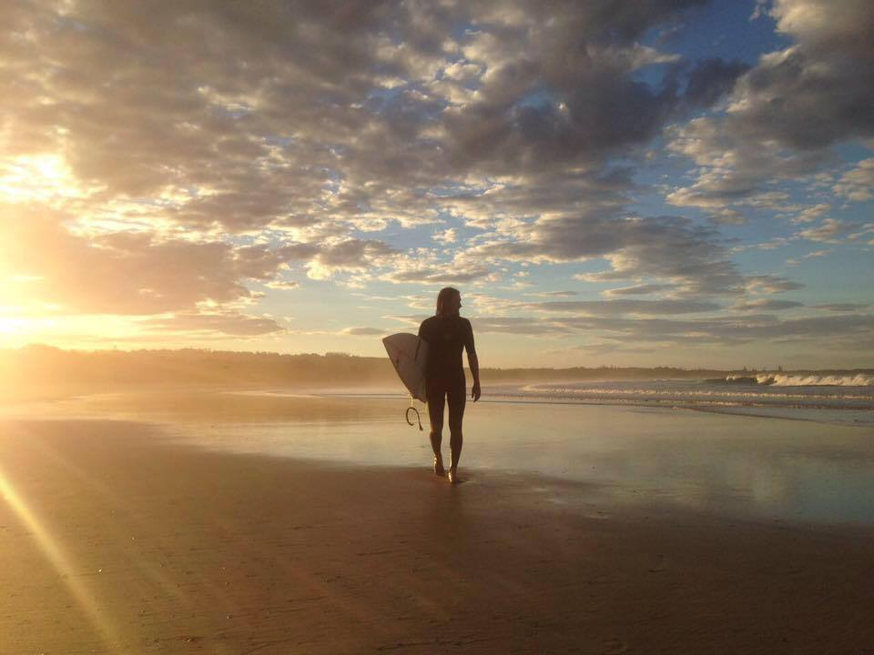

- Wir beantragen das Visum 186 nicht aus Deutschland, sondern reisen mit einem kostenlosen eVisitor (651) ein und stellen den Antrag vor Ort – damit greift ein Bridging Visa, auf dem Christian arbeiten darf.
- Skill Assessment als Koch (~4.120 AUD), PTE Academic (250 €) und das Erstgespräch beim Migration Agent (~250 AUD) sind erledigt – die Antragsgebühren fürs 186 folgen erst beim Einreichen.
- Einen Sponsor aus Deutschland zu finden, ist in der Gastronomie sehr unrealistisch. Christian sucht ab Juni 2026 vor Ort in der Northern Rivers Region, NSW.
- Lucy und die Kinder laufen als Dependents im selben Antrag – kein PR bedeutet aber: Schule und Medicare zahlen wir in den ersten Jahren selbst.
Wir wandern 2026 als Familie nach Australien aus. Zielvisum: das 186, offiziell "Employer Nomination Scheme". Das ist kein Visum, das man mal eben online beantragt – das ist ein mehrstufiger Prozess, der ohne Sponsor-Arbeitgeber nicht funktioniert. Wir sind gerade mittendrin. Dieser Artikel ist kein Ratgeber, sondern unser Logbuch: Was wir entschieden haben, warum, was es gekostet hat und wo wir heute stehen. Für Familien, die einen ähnlichen Weg vor sich haben.
Kurz zu uns: Christian ist 37, ausgebildeter Koch mit sieben Jahren Selbstständigkeit. Lucy ist 30, schreibt gerade ihre Masterthesis in Innenarchitektur. Joris ist sechs, Linnea zwei. Ziel ist die Northern Rivers Region in New South Wales – Byron Bay und Umgebung. Christian fliegt am 23. Juni 2026 vor. Lucy und die Kinder folgen am 26. Juli.
Was ist das Visum 186?
Das Visum 186 ist ein permanentes Arbeitsvisum, für das dich ein australischer Arbeitgeber nominieren muss. Offizieller Name: "Employer Nomination Scheme (subclass 186)". Das Department of Home Affairs führt es in seiner aktuellen Visaübersicht als einen der Standardwege zur permanent residency, wenn man über eine Arbeitsstelle einwandert (Department of Home Affairs, 2026).
Was das konkret heißt: Ohne Arbeitgeber, der dich nominiert, gibt es kein 186. Ohne 186 keine permanente Aufenthaltserlaubnis über diesen Weg. Und der Arbeitgeber muss eine Position anbieten, die auf der offiziellen Berufsliste steht – für Köche ist das der Fall. Die Liste heißt "Core Skills Occupation List" und wird regelmäßig aktualisiert.
Wichtig für uns: Das 186 ist direkt ein Daueraufenthalt. Keine Zwischenvisa, keine befristete Arbeitserlaubnis. Sobald es bewilligt ist, sind wir permanent in Australien. Der Weg dahin ist allerdings lang.
Die drei Streams – welchen wir nehmen
Das Visum 186 hat drei Varianten, offiziell "Streams" genannt. Laut Department of Home Affairs sind das: Direct Entry Stream, Temporary Residence Transition Stream und Labour Agreement Stream (Department of Home Affairs, 2026). Welcher für dich passt, hängt davon ab, ob du schon in Australien gearbeitet hast.
Direct Entry Stream
Das ist unser Weg. Direct Entry ist für Leute, die vorher nicht auf einem 482-Arbeitsvisum in Australien waren. Kommt man aus dem Ausland direkt ins 186, ist das der Stream. Voraussetzungen: Skill Assessment bestanden, Englischkenntnisse nachgewiesen, Arbeitgeber-Nominierung.
Temporary Residence Transition Stream
Für Leute, die schon mindestens zwei Jahre beim selben Arbeitgeber auf einem 482-Visum gearbeitet haben. Schlankerer Prozess, weil du dich bereits in Australien bewährt hast. Für uns nicht relevant – wir kommen direkt von außen.
Labour Agreement Stream
Spezialfall. Gilt, wenn zwischen Arbeitgeber und Regierung ein individueller Vertrag besteht, meist weil die Branche Personalmangel hat. Für uns spielt das keine Rolle.
Unsere Strategie: Tourist-Visum, dann 186 aus Australien
Das ist der Teil, über den wir am längsten nachgedacht haben. Wir haben uns bewusst gegen den direkten Weg entschieden – also gegen 186-Antrag aus Deutschland heraus. Der Grund: Bearbeitungszeiten. Unser Migration Agent hat uns gesagt, dass ein 186-Verfahren im ungünstigen Fall über ein Jahr dauern kann. Ein Jahr sitzen und warten, während Wohnung gekündigt, Restaurant geschlossen und die Kinder in der Schweeb hängen – das war keine Option.
Also haben wir umgeplant. Unser Weg sieht jetzt so aus:
- Einreise über ein kostenloses eVisitor (651) Tourist-Visum. Gilt für EU-Bürger, ist online beantragt, in der Regel innerhalb von Tagen genehmigt. Einreise bis drei Monate am Stück erlaubt – ohne Arbeitserlaubnis.
- Vor Ort einen Sponsor-Arbeitgeber finden. Dafür hat Christian die drei Monate.
- Sobald der Sponsor steht: 186-Antrag aus Australien heraus einreichen – zusammen mit unserem Migration Agent.
- Mit dem Antrag bekommen wir automatisch ein Bridging Visa. Das überbrückt die Wartezeit bis zur 186-Entscheidung. Wichtig: Auf dem Bridging Visa dürfen wir arbeiten.
Der Nachteil liegt auf der Hand: In den drei Monaten Tourist-Visum darf Christian nicht arbeiten. Das heißt Budget muss reichen – Mietwagen, Unterkunft, Essen, alles aus Ersparnissen. Gleichzeitig läuft die Suche nach Sponsor und Wohnung.
Der Vorteil dagegen ist entscheidend: Sobald das 186 beantragt ist und das Bridging Visa greift, dürfen wir arbeiten und müssen nicht mehr warten. Statt ein Jahr aus Deutschland zu bangen, bauen wir parallel unser Leben auf.
Unsere Einordnung: Diese Entscheidung hängt an einer einzigen Annahme – dass wir in den drei Tourist-Monaten wirklich einen Sponsor finden. Klappt das nicht, hängen wir an. Dafür gibt es keinen Plan B, der gleich gut wäre. Aber wir haben genug Vor-Ort-Netzwerk aus unserer früheren Zeit in Byron Bay, dass wir das Risiko eingehen.
Voraussetzungen: Skill Assessment, PTE, Alter
Für das 186 im Direct Entry Stream musst du laut Department of Home Affairs drei Grundvoraussetzungen erfüllen: Skill Assessment für deinen Beruf, nachgewiesene Englischkenntnisse und ein Alter unter 45 Jahren (Department of Home Affairs, 2026). Hier unser Stand:
Skill Assessment als Koch – erledigt
Christian hat das TRA Skill Assessment Anfang 2026 bestanden. Als Selbstständiger war das besonders aufwendig, weil wir zusätzlich Steuerbescheide, Kontoauszüge und Gewinnermittlungen übersetzen lassen mussten. Den ganzen Prozess haben wir in einem eigenen Artikel dokumentiert: Skill Assessment als Koch in Australien: Unsere Erfahrung als Selbstständiger. Dort findest du auch die komplette Kostenaufstellung.
PTE Academic – Proficient bestanden
Christian hat den PTE Academic in Hamburg gemacht und Proficient erreicht. Superior haben wir knapp verpasst, einzelne Skill-Scores waren gerade so darunter. Proficient reicht fürs 186, da muss man nicht optimieren. Der Test kostet rund 250 € (Stand April 2026, laut Pearson PTE), dazu kommen Anreise und ggf. Übernachtung – bei uns ICE nach Hamburg, schlafen bei Christians Bruder, also überschaubar.
Wir überlegen, Superior nachzuschieben. Nicht fürs 186, sondern als Rückversicherung für eine parallele EOI (Expression of Interest) auf einem Punkte-Visum. Superior gibt dort zusätzliche Punkte. Ob wir das machen, entscheiden wir, wenn der 186-Weg stabil läuft.
Alter
Die Altersgrenze liegt laut Department of Home Affairs bei 45 Jahren – zum Zeitpunkt der Einladung zum Antrag. Christian (37) und Lucy (30) sind klar darunter. Für Familien, die später im Leben auswandern wollen, ist das der kritische Punkt: Je näher man der 45 kommt, desto enger wird der Zeitplan.
Der Migration Agent: Warum wir uns beraten lassen
Wir hatten bis jetzt ein Erstgespräch mit Johannes Kunz, einem deutschsprachigen Migration Agent. Kosten: rund 250 AUD (ungefähr 200 €). Das Gespräch ging lange, er hat sich Zeit genommen, alles erklärt und auch unbequeme Fragen direkt beantwortet. Was uns besonders geholfen hat: Er hat uns nicht verkauft, er hat uns abgeklopft. Welche Risiken bei welchem Weg, welche Stream-Variante für unseren Fall sinnvoll ist, und wo die typischen Fallstricke liegen.
Nach dem Erstgespräch konnten wir weiter Fragen per E-Mail stellen. Bis heute haben wir jedes Mal eine Antwort bekommen, ohne dass zusätzliche Kosten entstanden sind. Das hat uns überzeugt. Wir würden Johannes Kunz jederzeit weiterempfehlen.
Die nächsten Kosten kommen erst, wenn er den 186-Antrag mit uns zusammen einreicht. Wie hoch das genau wird, hängt vom Fall ab – er rechnet nach Aufwand, nicht pauschal. Sobald wir die konkrete Zahl haben, tragen wir sie hier nach.
Unsere Erfahrung: Ein Migration Agent ist kein Pflicht-Posten, aber bei einem 186-Antrag mit Familie würden wir das kein zweites Mal ohne versuchen. Die Kosten für Fehler – etwa falsche Stream-Wahl oder unvollständige Unterlagen – sind höher als das Honorar.
Kosten-Breakdown: Was wir bisher bezahlt haben
Wir bauen hier keine Zahlen-Fantasie, sondern zeigen echte Rechnungen. Die großen Posten fürs 186 fallen erst beim Antrag an – die haben wir noch nicht. Was bis jetzt ausgegeben wurde:
| Was | Kosten | Status |
|---|---|---|
| TRA Skill Assessment als Koch (inkl. Übersetzungen) | ~4.120 AUD | ✓ Bezahlt |
| PTE Academic Test (Hamburg) | ~250 € | ✓ Bezahlt |
| Anreise + Übernachtung PTE (bei uns überschaubar) | individuell | ✓ Bezahlt |
| Erstgespräch Migration Agent (Johannes Kunz) | ~250 AUD | ✓ Bezahlt |
| eVisitor (651) Tourist-Visum | 0 € | In Vorbereitung |
| 186-Antragsgebühren + Agent-Honorar | folgt | ⏳ Nach Sponsor-Zusage |
Die offiziellen Antragsgebühren fürs 186 sind nicht trivial. Sie werden vom Department of Home Affairs regelmäßig angepasst und fallen für jedes Familienmitglied getrennt an (Department of Home Affairs, 2026). Wir rechnen aktuell damit, dass die gesamten Visa-Kosten für uns vier im niedrigen fünfstelligen Bereich landen werden – inklusive Agent-Honorar, Gesundheitschecks und Police Clearance. Sobald wir die konkrete Summe kennen, tragen wir sie hier nach.
Sponsor finden: Warum wir vor Ort suchen
Wir haben monatelang aus Deutschland heraus versucht, einen Sponsor zu finden. Facebook-Gruppen, Jobportale wie Seek und Indeed, direkte Anschreiben an Restaurants in der Region. Was uns mittlerweile klar ist: In der Gastronomie funktioniert das nur sehr selten. Die meisten Betriebe haben zwar Personalmangel, aber niemand stellt einen Koch ein, der nicht mindestens einmal zum Probearbeiten vorbeikommen kann. Und kein Probearbeiten ohne vor Ort zu sein.
Anders ist es, wenn du in einem internationalen Konzern arbeitest, der in Australien eine Niederlassung hat. Dann kann die interne HR oft eine Visum-Nominierung ausstellen, ohne dass du physisch da bist. In der selbstständigen Gastronomie? Praktisch nie.
Deshalb fliegt Christian vor. Er hat drei Monate Tourist-Visum, in denen er vor Ort in Restaurants reingeht, den Lebenslauf auf den Tisch legt und nach einem Gespräch fragt. Dieser Weg ist in Australien völlig normal – CVs physisch abzugeben gilt als engagiert, nicht als altmodisch. Parallel läuft die Online-Suche weiter, falls doch jemand von Deutschland aus antwortet.
Was die Vor-Ort-Suche praktisch bedeutet: Wo lebt Christian in dieser Zeit? Wie bleibt er mobil? Die Antwort heißt Housesitting, Mietwagen und später Auto-Kauf – das haben wir in einem anderen Artikel beschrieben. Kurz: Die ersten zwei Wochen Mietwagen, dann Gebrauchtwagen, Unterkunft über Aussie House Sitting und Facebook-Gruppen.
Familie im 186: Lucy und die Kinder als Dependents
Ein großer Pluspunkt des 186: Familienmitglieder laufen als Dependents im selben Antrag mit. Laut Department of Home Affairs gelten Ehepartner oder De-facto-Partner sowie Kinder unter 18 als "secondary applicants" (Department of Home Affairs, 2026). Bedeutet für uns: Christian ist primärer Antragsteller, Lucy, Joris und Linnea sind mit drin.
Das hat praktische Vorteile. Lucy muss keine eigene Visum-Route bauen, die Kinder ebenfalls nicht. Sobald das 186 bewilligt ist, sind wir alle vier permanent in Australien. Die Antragsgebühren fallen pro Person an, das ist der Nachteil – aber ein gemeinsames Verfahren ist immer noch schneller und günstiger als vier einzelne.
Was das 186 nicht beinhaltet: Schule und Medicare in den ersten Jahren. Solange wir noch keinen PR-Status in der Tasche haben, zahlen wir Schulgebühren und Krankenversicherung selbst. Wie wir das mit Joris' Einschulung und Linneas Betreuung planen, haben wir hier aufgeschrieben: Auswandern nach Australien mit Kindern: Unsere ehrliche Vorbereitung.
Timeline: Wo wir heute stehen
Wir haben den Prozess im Dezember 2025 offiziell gestartet – mit dem Erstgespräch beim Migration Agent. Zwischenstand April 2026:
- Dezember 2025: Erstgespräch Migration Agent, Planung der Stream-Wahl
- Januar–März 2026: Skill Assessment Koch (Dokumente, Übersetzungen, Technical Interview) – bestanden ✓
- Februar 2026: PTE Academic in Hamburg – Proficient ✓
- April 2026: eVisitor (651) wird in den kommenden Tagen beantragt
- 23. Juni 2026: Christian fliegt vor
- Juli–September 2026: Sponsor-Suche vor Ort
- Idealfall ab September 2026: 186-Antrag aus Australien + Bridging Visa + Arbeitserlaubnis
- Bewilligung 186: je nach Bearbeitungszeit, aktuell kein Stichtag
Der optimistische Pfad sieht so aus. Der realistische: Alles kann sich schieben. Wir haben uns innerlich darauf eingestellt, dass zwischen Ankunft und 186-Bewilligung ein Jahr oder mehr liegen kann.
Was wir bis jetzt gelernt haben
Drei Dinge, die wir gerne früher gewusst hätten:
1. Stream-Wahl früh klären
Der Unterschied zwischen Direct Entry und Transition wirkt auf dem Papier klein, im Verfahren ist er riesig. Wir haben das erst beim Erstgespräch mit dem Agent wirklich verstanden. Wer mit einem falsch angenommenen Stream losrennt, verliert Monate.
2. Skill Assessment vor allem anderen
Ohne TRA kein 186. Und das TRA kann – je nach Weg – Monate dauern. Wir haben es über ATTC gemacht, weil das schneller ist. Details stehen im Skill-Assessment-Artikel. Wer erst mit dem Rest anfängt und das Skill Assessment hinten anhängt, verschenkt Zeit.
3. Aus Deutschland heraus keinen Sponsor zu erzwingen
Wir haben lange versucht, den 186-Antrag komplett aus Deutschland durchzuziehen. Gibt es Leute, bei denen das funktioniert? Ja, aber selten – und fast nur in Konzernen mit australischer Tochter. In der selbstständigen Gastronomie: Lass es. Spart Nerven.
Häufig gestellte Fragen
Wie lange dauert das Visum 186 realistisch?
Die Bearbeitungszeit schwankt stark. Unser Migration Agent hat uns gesagt, dass ein 186-Verfahren im Direct Entry Stream aus dem Ausland im ungünstigen Fall über ein Jahr dauern kann. Aktuelle Richtwerte veröffentlicht das Department of Home Affairs regelmäßig (Department of Home Affairs, 2026). Wir rechnen mit 9–15 Monaten nach Antragseinreichung.
Darf ich auf dem Bridging Visa in Australien arbeiten?
In unserem Fall ja – weil wir das 186 aus Australien heraus beantragen und unser Migration Agent das Bridging Visa entsprechend mit Arbeitsrechten ausstattet. Die genauen Rechte hängen vom Typ des Bridging Visa ab (Bridging Visa A, B oder C). Welches du bekommst, klärt dein Agent. Auf einem reinen Tourist-Visum darfst du nicht arbeiten – nur nach 186-Antragseinreichung greift die Brücke.
Brauche ich wirklich einen Migration Agent?
Pflicht ist es nicht. Aber ein 186-Antrag mit Familie ist komplex – Stream-Wahl, Dokumentenliste, Fristen, Kommunikation mit dem Department. Wir haben uns für Johannes Kunz entschieden, weil das Erstgespräch (~250 AUD) mehr geklärt hat als ein Monat Eigenrecherche. Für einen klaren, einfachen Einzelfall ohne Familie kann ein Selbstantrag gehen. Mit Kindern würden wir davon abraten.
Was passiert, wenn Christian vor Ort keinen Sponsor findet?
Dann läuft das eVisitor nach drei Monaten ab und wir müssen neu planen. Mögliche Wege: Verlängerung über ein Visitor Visa (subclass 600), Wechsel auf ein 482-Sponsored-Work-Visa als Zwischenschritt oder Rückflug. Wir haben Puffer für diesen Fall eingeplant, rechnen aber nicht fest damit – die Sponsor-Chancen in der Region sind real.
Was kostet das Visum 186 insgesamt für eine Familie?
Offizielle Antragsgebühren ändern sich regelmäßig. Dazu kommen Skill Assessment, PTE, Migration Agent, Gesundheitschecks und Police Clearance. Für eine vierköpfige Familie rechnen wir konservativ mit einem niedrigen fünfstelligen Euro-Betrag – also deutlich über 10.000 €. Die aktuell offizielle Gebührenübersicht findest du beim Department of Home Affairs. Sobald unsere Rechnung steht, tragen wir sie hier nach.
Warum nicht das Punkte-Visum (189 oder 190)?
Die Punkte-Visa sind unabhängig von einem Arbeitgeber, aber brauchen sehr hohe Punktzahlen – und für Köche ist die Konkurrenz in der Skilled Occupation List eng. Wir überlegen eine EOI für 189/190 parallel, vor allem wenn wir PTE auf Superior hochziehen. Aktuell ist das 186 über einen Sponsor der realistischere Hauptweg.
Stand: April 2026 · Quellen: Department of Home Affairs – Visa 186, Pearson PTE Academic, Trades Recognition Australia